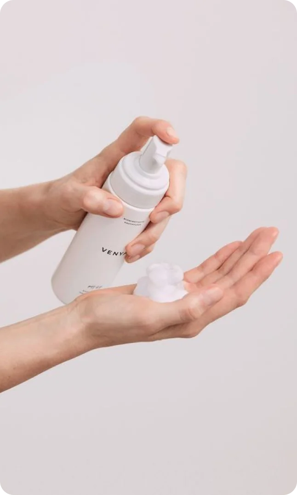
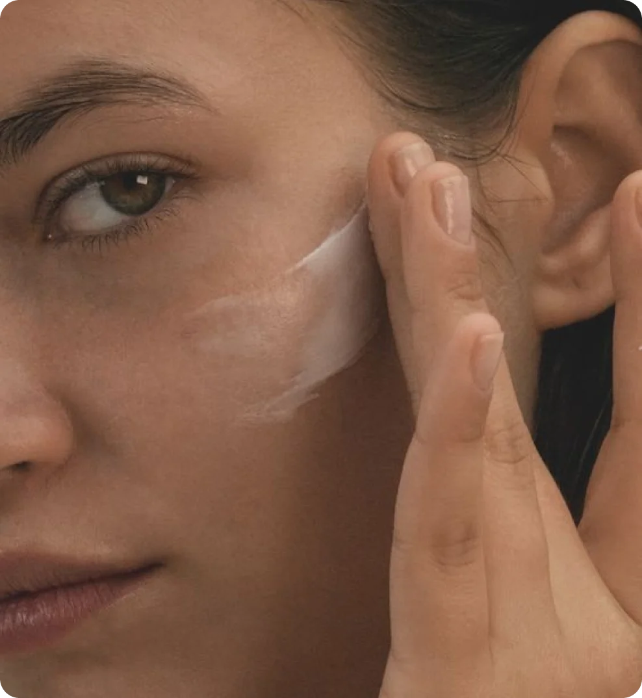

15 марта 2024
несовершенства
уход
возраст
Предотвращение появления акне включает в себя ряд шагов по уходу за кожей, поддержанию здорового образа жизни и избеганию раздражающих факторов. Вот несколько рекомендаций, которые помогут предотвратить появление акне.
Уходовая рутина
Регулярное умывание
Ежедневное умывание лица помогает удалять излишки масла, грязи и мертвых клеток кожи, что может привести к забиванию пор и образованию акне. Используйте мягкий очищающий гель или пенку для лица, подходящие для вашего типа кожи. Однако важно помнить, что слишком частое умывание или использование агрессивных очищающих средств также может вызвать пересушивание кожи, что может привести к еще большему выделению масла и ухудшению состояния кожи.
Для борьбы акне рекомендуется использовать мягкие очищающие средства, подходящие для вашего типа кожи, и умываться не более двух раз в день - утром и вечером. Также важно после умывания использовать увлажняющее средство, чтобы предотвратить пересушивание кожи, об этом свидетельствует следующий пункт.
Тщательное увлажнение
Увлажняющие средства могут быть важным компонентом ухода за кожей при борьбе с прыщами. Несмотря на то, что может показаться противоречивым использовать увлажняющие средства для кожи, склонной к прыщам, они могут помочь в улучшении состояния кожи. Причина в том, что пересушенная кожа может стимулировать еще большее выделение масла, что в свою очередь может усугубить проблему прыщей. Увлажняющие средства помогают сохранить уровень влаги в коже, предотвращая пересушивание и уменьшая риск усиления выработки себума.
Однако при выборе увлажняющего средства для кожи, склонной к прыщам, важно обратить внимание на то, чтобы оно было некомедогенным, то есть не вызывало закупоривание пор. Также следует избегать увлажняющих средств, содержащих тяжелые масла или другие ингредиенты, которые могут ухудшить состояние кожи.
 
Избегайте чрезмерного использования косметики
Чрезмерное использование косметики как способ борьбы с прыщами может быть вредным для кожи. Некоторые люди могут быть склонны к использованию большого количества косметических средств в попытках замаскировать или устранить прыщи. Однако это может привести к обратному эффекту и усугубить проблему.
Использование слишком много косметики на коже, особенно тяжелых или жирных продуктов, может привести к закупориванию пор, увеличению выработки себума и образованию новых прыщей. Кроме того, некоторые ингредиенты в косметических средствах, такие как агрессивные очищающие вещества или аллергены, могут вызывать раздражение кожи и усугублять воспаление.
Вместо чрезмерного использования косметики для борьбы с прыщами, рекомендуется обратить внимание на выбор качественных, некомедогенных продуктов, которые не будут закупоривать поры и не будут усиливать выработку масла.
Здоровый образ жизни
Правильное питание
Здоровое питание может оказать положительное воздействие на состояние кожи и помочь бороться с прыщами. Ешьте больше овощей и фруктов, а также пейте много воды. Кроме того, чрезвычайно полезны для кожи и здоровья в целом жиры, содержащиеся в рыбе, орехах, авокадо и семенах.
А вот чересчур сладкой пищи стоит избегать, поскольку избыток сахара может привести к повышенной выработке сала и, как следствие, к закупориванию пор. Мы понимаем, как тяжело отказаться от сладкого, поэтому рекомендуем снижать количество потребляемого сахара постепенно.
Управление стрессом
Управление стрессом может играть важную роль в борьбе акне, поскольку стресс может быть одним из факторов, способствующих образованию прыщей. Например, регулярные физические упражнения: физическая активность может помочь снизить уровень стресса, так как она способствует выработке эндорфинов — естественных антистрессовых гормонов. Также попробуйте медитацию, йогу, дыхательные упражнения. Ну, и конечно, поддержка близких: общение с друзьями, семьей или профессиональным психологом может помочь в управлении стрессом и снятии негативного воздействия на кожу.
Личная гигиена
Соблюдайте базовые правила личной гигиены. Регулярно мойте руки, меняйте полотенца и постельное белье, раз в несколько дней обрабаывайте спиртом поверхности, к которым часто прикасаетесь руками (например, мобильный телефон или клавиатура компьютера).
Старайтесь лишний раз не трогать лицо руками, поскольку это может повредить кожу и привести к ухудшению состояния акне. Руки могут содержать бактерии, которые могут вызвать воспаление и ухудшить состояние кожи. Рекомендуется использовать специальные очищающие средства, которые подходят для вашего типа кожи, и следовать рекомендациям дерматолога для эффективной борьбы с проблемой.

Помните, чтокаждый человек имеет свой индивидуальный тип кожи, и то, что работает для одного человека, может не подойти другому. Если у вас возникают серьезные проблемы с акне, мы настоятельно рекомендуем обратиться к дерматологу.